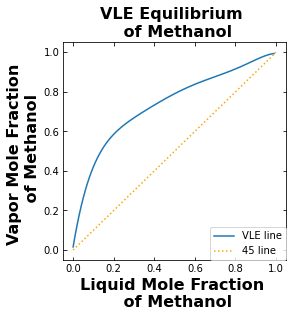
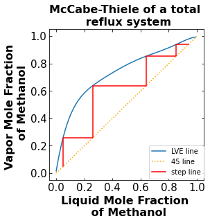
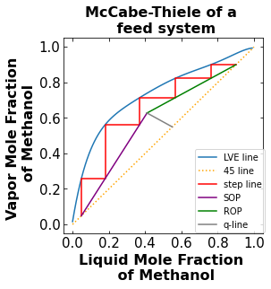
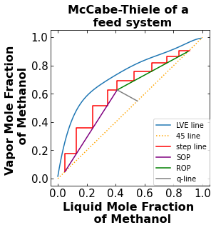

Plotting McCabe-Thiele diagram through computational methods
Contents
Plotting McCabe-Thiele diagram through computational methods#
Prepared by:
Zeping Chen - zchen23@nd.edu
Suporna Paul - spaul2@nd.edu
1. Introduction#
When you plot the McCabe-Thiele diagram by hand, have you ever had the thought of there has to be an easier way to do this? Plotting the operating line and step lines computationally is much more accurate and efficient than plotting it by hand, especially when efficiency of the column is involved. In this notebook, we will learn to plot the McCabe-Thiele diagram using python.
1.1 Target audience and learning objectives#
This notebook is intended for ChemE students (both undergraduates and graduate students) who have completed or are currently enrolled in a Chemical Engineering Separations Process class.
After studying this notebook, completing the activities, and asking questions in class, you should be able to:
Use numpy to solve system of linear equations
Use pandas to read csv
Produce “publication ready” plots
Graph the McCabe-Thiele diagram using computational techniques
1.2 Relevant notebooks from the class:#
1.15. Preparing Publication Quality Figures in Python
1.3 References:#
McCabe-Thiele Plot | Neutrium. https://neutrium.net/unit-operations/distillation/mccabe-thiele-plot/ (accessed 2022-10-15
Vapor-Liquid Equilibrium (VLE) Model for vapor mole frac methanol and liquid mole frac methanol. https://raw.githubusercontent.com/chennieXD/McCabe-Thiele/main/LiquidVaporEquil.csv (accessed 2022-10-15).
Stichlmair, G.; Klein, H.; Rehfeldt, S. Distillation: Principles and Practice, 2nd ed.; Wiley, 2021.
Gorak, A.; Sorensen, E. Distillation: Fundamentals and Principles (Handbooks in Separation Science), 1st ed.; Academic Press, 2014.
1.4 Background information#
For the separation of organic chemicals, distillation columns are the primary equipment that is being used in a number of chemical process industries including petroleum refineries, natural gas processing plants, etc. In short, a distillation column is made of a tube structure that provides surfaces on which condensations and vaporizations occur to separate binary or multi-component mixtures by varying column pressure, temperature, tube size, and tube diameter. McCabe-Thiele diagram is a diagram utilized frequently in designing distillation columns. The diagram is able to provide an estimate of the number of stages needed to perform the desired separation.
2. Solving distillation column using McCabe-Thiele method#
Problem description#
A student is trying to calculate the number of stages in a distillation column. Since there is insulation installed to improve the efficiency of the column, he can not just count the number of stages physically. To figure out the number of stages, he is feeding a methanol-water mixture into the column to observe how the column performs. Using a hydrometer, the student is able to measure the specific gravity of the feed: 0.887, distillate: 0.815 and bottoms: 0.990. He is also able to measure the reflux ratio to be 1.25 and the feed has a liquid mole fraction of 0.36.
Using the above information:
Calculate the mole fraction of each stream from specific gravity
Plot the vapor liquid equilibrium line and 45 degree line.
Plot the McCabe-Thiele diagram for a total reflux run for the mixture and calculate the number of stages.
Plot the McCabe-Thiele diagram for a feed run for the mixture and calculate the number of stages.
Discuss what the McCabe-Thiele diagram tells you about the feed condiiton
Discuss how a McCabe-Thiele plot with 100% efficiency is unrealistic.
Note: This problem is developed by Zeping Chen and Suporna Paul. Here, we demostrated a step by step process of using this python notebook to solve for distillation column parameters.
For further information, readers are encouraged to read these following text books which contains similar math problems.
References:
Stichlmair, G.; Klein, H.; Rehfeldt, S. Distillation: Principles and Practice, 2nd ed.; Wiley, 2021.
Gorak, A.; Sorensen, E. Distillation: Fundamentals and Principles (Handbooks in Separation Science), 1st ed.; Academic Press, 2014.
2.1. Solve for mole fraction of each stream#
# libraries used
import matplotlib.pyplot as plt
import numpy as np
import pandas as pd
2.1.a. Obtaining density of mixture through specific gravity#
The Density of each component is given as below:
Water: 997 kg/m\(^3\)
Methanol: 792 kg/m\(^3\)
# Density of each species
# water
P_water = 997 # kg/m^3
# Methanol
P_Methanol = 792 # kg/m^3
We can rearrange the definition of specific gravity (SG) to get the density of mixture in each stream:
We also know that the density (ρ) of a mixutre can be calculated by summing the mole fraction (X) of each component by that component’s density.
From these information, we can write a system of linear equations to calculate the mole fraction of methanol and water in each stream:
Calculate the mole fraction of Methanol in each stream by solving the above system of equations by hand. Record Your answer on pencil and paper
2.1.b. Create a function to solve Linear System#
An easier method to calculate the mole fraciton of Methanol in each stream is to use linear algebra.
Matrix form: $$
$$
Now let’s write a function that will solve the linear system of equations to obtain the mole fraction of Methanol in each stream using Python.
def conc_solver(SG):
# Add your solution hereS
The specific gravity of each stream is given as below:
Feed: 0.887
Distillate: 0.815
Bottoms: 0.990
# Specify the Specific Gravity of each stream
# Add your solution hereS
2.1.c. Solve for the mole fraction of Methanol in each stream#
Using the function created previously to calculate and print the mole fraction of Methanol in each stream:
USe xD for the distillate stream
USe xB for the bottom stream
USe xZ for the feed stream
# calculate the molar fraction of each stream
# Add your solution hereS
The molar fraction of Methanol in the distillate stream is: 0.900
The molar fraction of Methanol in the bottom stream is: 0.049
The molar fraction of Methanol in the feed stream is: 0.550
3. Vapor-liquid equilibrium (VLE) model#
3.1. Fit the VLE data points to create a best fit line#
Using the points of VLE obtained from Aspen Plus to generate a best fit line to model VLE. Hint: Use Excel.
#imports the csv data into python
url = 'https://raw.githubusercontent.com/chennieXD/McCabe-Thiele/main/LiquidVaporEquil.csv'
liq_vap_data = pd.read_csv(url)
print(liq_vap_data)
vapor mole frac methanol liquid mole frac methanol
0 1.000000 1.00
1 0.991953 0.98
2 0.983907 0.96
3 0.975858 0.94
4 0.967805 0.92
5 0.959746 0.90
6 0.951678 0.88
7 0.943597 0.86
8 0.935500 0.84
9 0.927383 0.82
10 0.919242 0.80
11 0.911073 0.78
12 0.902868 0.76
13 0.894623 0.74
14 0.886331 0.72
15 0.877983 0.70
16 0.869572 0.68
17 0.861087 0.66
18 0.852518 0.64
19 0.843852 0.62
20 0.835076 0.60
21 0.826174 0.58
22 0.817129 0.56
23 0.807920 0.54
24 0.798526 0.52
25 0.788920 0.50
26 0.779072 0.48
27 0.768950 0.46
28 0.758514 0.44
29 0.747718 0.42
30 0.736511 0.40
31 0.724832 0.38
32 0.712610 0.36
33 0.699758 0.34
34 0.686178 0.32
35 0.671750 0.30
36 0.656326 0.28
37 0.639734 0.26
38 0.621753 0.24
39 0.602116 0.22
40 0.580482 0.20
41 0.556419 0.18
42 0.529364 0.16
43 0.498575 0.14
44 0.463048 0.12
45 0.421395 0.10
46 0.371637 0.08
47 0.310848 0.06
48 0.234504 0.04
49 0.135217 0.02
50 0.000000 0.00
3.2. Vapor-liquid equilibrium of methanol#
Plot the VLE of methanol using the best fit line generated in Excel. Plot the 45 degree line on the same plot.
# Add your solution hereS

3.3. Plot the McCabe-Thiele for a total reflux run#
3.3.a. Stepping line#
The stepping line connects the points that represent the mole fraction of Methanol in each stage of the distillation column. It starts at the bottom mole fraction of Methanol on the 45 line and ends after reaching the mole fraction of Methanol in the distillate on the 45 line.![show composiiton.png]()
Create a function that is able to generate the points requried to plot the stepping line.
def stair(slope,y_intercept,x_start ,y_start, y_end, Efficiency = 1):
# Add your solution hereS
3.3.b. McCabe-Thiele for a total reflux run#
In a total reflux run, there are no feed entering the column and no product leaving the column. The distillate is all refluxed back into the top of the column. The stepping line is plotted along the 45 degree line and the vapor-liquid equilibrium line.
# Add your solution hereS
The number of total theoretical stage is 4

4. Plot the McCabe-Thiele diagram of a feed run#
In a more realistic sense, there will be mixture feed entering the column to be separated. As a result, there will also be a distillate stream and a bottoms stream. When there are feed entering the column and product leaving the column, the McCabe-Thiele diagram will have the feed condition (q) line, rectifying line, and stripping line. The rectifying starts at the distillate mole fraction of Methanol and comes down until it corsses the q-line. The q-line starts at the feed mole fraction of Methanol and meets the stripping and rectifying line. The stripping line starts at the bottom mole fraction of Methanol and meets the q-line and rectifying line.
![download.png]()
4.1. Solve for the slope of the q and rectifying line#
Using the relationship below, calculate the slope of the q and rectifying line. q is the mole fraction of liquid in the feed stream and R is the reflux ratio. Store the slope of q-line as m_q and slope of rectifying operating line as m_rec
# Mole fraction of liquid in feed
q = 0.36
# Reflux Ratio
R= 1.25
# Add your solution hereS
4.2. Intercept of the q-line and the rectifying line, and calculate the slope and y-intercept of the stripping line#
To find the intercept of the q-line and the rectifying line, the point-slope equation of the q-line and the rectifying line can be turned into slope-interecept form and made into a system of linear equations.
Matrix form: $$
$$
After calculating the intercept, we have two points of the stripping line to calculate the slope and y-intercept to get the slope-intercept form of the equation.
# Add your solution hereS
4.3. Generate the points needed to plot the stepping line, plot the McCabe-Thiele diagram, and calculate the number of stages#
Think where you want the “stair” to stop on your plot when you enter the y_start and y_end for the function.
# Add your solution hereS
# Add your solution hereS

The number of total theoretical stage is 5
5. Discussion : Question 1#
From the McCabe-Thiele diagram plotted above what can we say about the phase of the feed stream. Hint: Look at the slope of the q-line.
![mccabe-thiele-feed-condition.png]()
Your Answer:
Since the q-line slope is between 0 and -1, it tells us that the feed stream is mostly a vapor feed. This conclusion is in line with the problem statement where q, the mole fraction of liquid, is 0.36, which means the feed is mostly vapor.
6. Discussion : Question 2#
Why is the McCabe-Thiele diagram plotted above is unrealistic in the real world? What would you change to make the plot more realistic. Plot the modified plot and talk about how the number of stages changed. Hint: Think efficiency. Is there ever 100% efficiency in the real world? A distillation column typically have a efficiency of 60%.
Your Answer:
The diagram plotted above uses 100% efficiency in the column. Since 100% efficiency is not possible in the real world, it makes the plot above unrealistic. A more realistic plot would use a efficiency of around 60% like the one plotted below. The number of stages increased from 5 to 9, which makes sense because less efficiency means more stages are required.
# Effiicency
# Add your solution hereS
# McCabe-Thiele of a feed run
# stripping portion of stepping line generation
stripping_line = stair(slope = m_strip ,y_intercept = y_intercept_strip, x_start = xB , y_start = xB , y_end = intercept[1], Efficiency = efficiency)
xplot_stripping = stripping_line[0]
yplot_stripping = stripping_line[1]
# rectifying portion of stepping line generation
rectifying_line = stair(slope = m_rec ,y_intercept = y_intercept_rec, x_start = (yplot_stripping[-1]-y_intercept_rec)/m_rec , y_start = yplot_stripping[-1] , y_end = xD, Efficiency = efficiency)
xplot_rectifying = rectifying_line[0]
yplot_rectifying = rectifying_line[1]
# complie the x and y points to respective liststogether
xplot = xplot_stripping + xplot_rectifying
yplot = yplot_stripping + yplot_rectifying
# McCabe-Thiele diagram
fig = plt.figure(figsize=(4,4))
# plot the LVE line
plt.plot(liqvapx,liqvapy)
# plot the 45 degree line
plt.plot([0,1],[0,1],color='orange',linestyle=':')
# plot the step line
plt.plot(xplot, yplot, color='red')
# plot the SOP
plt.plot([xB,intercept[0]],[xB,intercept[1]], color='purple')
# plot the ROP
plt.plot([xD,intercept[0]],[xD,intercept[1]], color='green')
# plot the q-line
plt.plot([xZ,intercept[0]],[xZ,intercept[1]], color='grey')
# Formating the plot
plt.xlabel('Liquid Mole Fraction \n of Methanol',fontsize=16,fontweight='bold')
plt.ylabel('Vapor Mole Fraction \n of Methanol',fontsize=16,fontweight='bold')
plt.xticks(fontsize=15)
plt.yticks(fontsize=15)
plt.tick_params(direction="in",top=True, right=True)
plt.title('McCabe-Thiele of a \n feed system',fontsize=16, fontweight = 'bold')
plt.legend(labels=('LVE line', '45 line', 'step line', 'SOP','ROP','q-line'),fontsize=10,bbox_to_anchor=(1.0, 0.43),borderaxespad=0)
plt.show()
total_stage = stripping_line[2] + rectifying_line[2]
print("The number of total theoretical stage is ",total_stage)

The number of total theoretical stage is 9